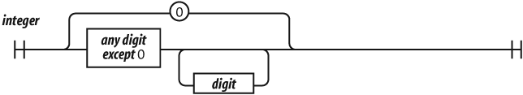
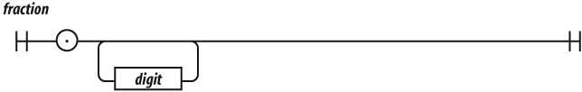
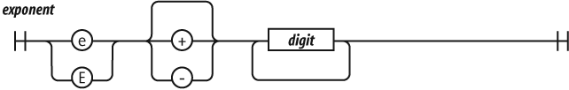
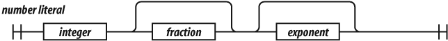

TFRecords via Protocol Buffer Definitions
Thursday March 30, 2017
I've written about how to use TFRecords, and I've written about how protocol buffer messages are defined. Since the data structures in TFRecords are defined as protocol buffer messages, we can use their definitions to understand them.
Protocol buffer definitions remind me a little bit of railroad diagrams like the ones in Douglas Crockford's JavaScript: The Good Parts. Here's how Crockford builds up number literals in JavaScript, starting from digits:




Small components are fully defined, which can then be built into more complex constructs. (More examples.) Protocol buffer definitions are built in much the same way.
With comments, the TensorFlow source files feature.proto and example.proto total 400 lines. There are only about 30 lines are not comments. These lines (rearranged slightly) do all the defining of the Example and SequenceExample formats that are used for TFRecords.
message BytesList {
repeated bytes value = 1;
}
message FloatList {
repeated float value = 1 [packed = true];
}
message Int64List {
repeated int64 value = 1 [packed = true];
}
message Feature {
oneof kind {
BytesList bytes_list = 1;
FloatList float_list = 2;
Int64List int64_list = 3;
}
}
message Features {
map<string, Feature> feature = 1;
}
message Example {
Features features = 1;
}
message FeatureList {
repeated Feature feature = 1;
}
message FeatureLists {
map<string, FeatureList> feature_list = 1;
}
message SequenceExample {
Features context = 1;
FeatureLists feature_lists = 2;
}These brief definitions give rise to most of the functionality described for creating, writing, and reading the TFRecords formats.
I'm working on Building TensorFlow systems from components, a workshop at OSCON 2017.